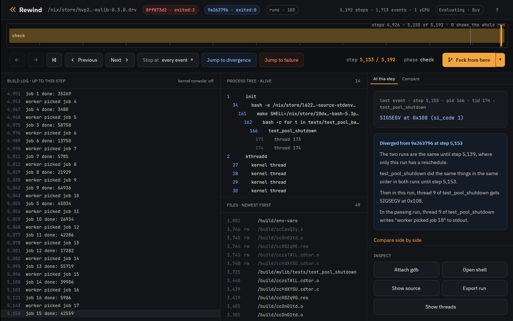

Tutorial · Advanced
Tutorial: advanced features
Short recipes for what the Nix and container tutorials leave out, each in the terminal and in the desktop app. They use the Nix tutorial's runs and install.
The runs
$ rewind check --epoch 1790985600 github:fzakaria/rewindvm#mylib | grep -E 'ends differently|perturbing only|decides it|passing:|failing:|same run until|open both'
rewind: packing 62 store paths for mylib-0.3.0
schedule 6 ends differently; narrowing the steps it perturbs
perturbing only steps 3629..5140 still ends differently
step 5139 decides it: a reschedule there makes the run fail
passing: run 9a2637968e7a4cf3, schedule 6 over steps 3629..5139
failing: run 8ff873d250eafc8c, schedule 6 over steps 3629..5140
the two are the same run until step 5139
open both in the desktop app: rewind open 8ff873d250eafc8c 5153 --compare 9a2637968e7a4cf3The failing run crashes at step 5153.
Find the line a thread was on
rewind where names the line of the program's own code a thread was on at a
step, skipping the C library and, in Rust, the standard library and dependencies. By
default it picks the thread of the step's event; at 5153 that is the worker that
segfaulted:
$ rewind where 8ff873d2 5153
rewind: process 166 at step 5153; loading symbols for 4 of its files
rewind: fetched 3 source files from the VM
rewind: walking thread 174's stack in gdb
rewind: downloading debug info for libc.so.6; first time only
rewind: downloading debug info for libpthread.so.0; first time only
rewind: downloading debug info for ld-linux-x86-64.so.2; first time only
rewind: downloading the sources of libc.so.6; first time only
process 166 (test_pool_shutdown), thread 174, at step 5153
#0 worker (src/pool.c:77)
75 printf("job %d done: %ld\n", job, result & 0xffff);
76 fflush(stdout);
> 77 p->queue->completed++;
78 }
79 }
called from #1 start_thread (pthread_create.c:454)
called from #2 __GI___clone3 (../sysdeps/unix/sysv/linux/x86_64/clone3.S:78)
--tid picks another thread, on the CPU or not. At step 5150, the worker's
last write, the main thread is waiting to join the workers:
$ rewind where 8ff873d2 5150 --tid 166
rewind: process 166 at step 5150; loading symbols for 4 of its files
rewind: read 3 source files fetched from the VM earlier
rewind: walking thread 166's stack in gdb
rewind: downloading the sources of libc.so.6; first time only
process 166 (test_pool_shutdown), thread 166, at step 5150
#7 pool_shutdown (src/pool.c:128)
126
127 for (int i = 0; i < POOL_WORKERS; i++)
> 128 pthread_join(p->workers[i], NULL);
129 pthread_cond_destroy(&p->ready);
130 pthread_mutex_destroy(&p->lock);
called from #8 main (tests/test_pool_shutdown.c:24)
called from #9 __libc_start_call_main (../sysdeps/nptl/libc_start_call_main.h:59)
--json prints every frame and which one was chosen. For every frame of every
thread, ask gdb for all the stacks of the process:
$ rewind gdb 8ff873d2 5150 --pid 166 -- -batch -ex 'thread apply all bt' 2>/dev/null | grep -E '^Thread|src/|tests/'
Thread 4 (Thread 1.174 (test_pool_shutd, on the CPU)):
#14 worker (arg=0x5556f833c010) at src/pool.c:75
Thread 3 (Thread 1.173 (test_pool_shutd)):
#5 0x00005556d620d3a9 in run_job (job=17) at src/pool.c:45
#6 worker (arg=0x5556f833c010) at src/pool.c:73
Thread 2 (Thread 1.166 (test_pool_shutd)):
#7 0x00005556d620d5b3 in pool_shutdown (p=p@entry=0x5556f833c010) at src/pool.c:128
#8 0x00005556d620d272 in main () at tests/test_pool_shutdown.c:24
Thread 1 (Thread 1.4194305 (the CPU, in test_pool_shutd 174)):
rewind gdb starts in the thread rewind where looks at, in its
innermost frame. --tid and --frame start it elsewhere, with
frames numbered as where --json numbers them. In the main thread's frame that
where chose, pool_shutdown has already set the queue to NULL:
$ rewind gdb 8ff873d2 5150 --tid 166 --frame 7 -- -batch -ex 'p p->queue'
rewind: process 166 at step 5150; loading symbols for 4 of its files
rewind: read 3 source files fetched from the VM earlier
rewind: gdb at step 5150 of 8ff873d250eafc8c
arch_local_irq_restore (flags=518) at ./arch/x86/include/asm/irqflags.h:146
146 return !(flags & X86_EFLAGS_IF);
[Switching to thread 2 (Thread 1.166)]
#0 __syscall_cancel_arch () at ../sysdeps/unix/sysv/linux/x86_64/syscall_cancel.S:56
56 ret
#7 0x00005556d620d5b3 in pool_shutdown (p=p@entry=0x5556f833c010) at src/pool.c:128
128 pthread_join(p->workers[i], NULL);
$1 = (struct queue *) 0x0
[Inferior 1 (process 1) detached]
where and gdb read each thread's registers from the VM kernel's task list, so
they work on runs recorded with a guest that lists its tasks, as these were.
In the app, the s key opens the source panel at the line rewind where names,
with the thread's frames below it; click a frame to see its line instead. The panel
follows the playhead, and each new step takes a few seconds since it forks the run.

Find the step that decides it
check names step 5139 as the one that decides it. Its passing run is the same
schedule without that step, so the two runs are the same machine until 5139, where only
the failing run gets a reschedule, and everything they do differently follows from it.
rewind where names the thread that was on the CPU there:
$ rewind where 8ff873d2 5139
rewind: process 166 at step 5139; loading symbols for 4 of its files
rewind: read 3 source files fetched from the VM earlier
rewind: walking thread 166's stack in gdb
rewind: downloading the sources of libc.so.6; first time only
process 166 (test_pool_shutdown), thread 166, at step 5139
#5 main (tests/test_pool_shutdown.c:23)
21 pool_submit(p, i);
22 while (pool_completed(p) < JOBS / 2)
> 23 usleep(100);
24 pool_shutdown(p);
25 printf("round %d: ok\n", round);
called from #6 __libc_start_call_main (../sysdeps/nptl/libc_start_call_main.h:59)
called from #7 __libc_start_main_impl (../csu/libc-start.c:372)
The test's main thread was waiting for half the jobs to finish before it shuts the pool
down. A worker checks p->stopping without the lock and then counts its job
through p->queue, which pool_shutdown frees. After the
reschedule at step 5139, the main thread sets the queue to NULL between a worker's check
and its count, and the worker faults on it 14 steps later. Without it, the worker counts
first and the test passes.
check --where looks up both threads itself: the one on the CPU at the
deciding step, and the one at the failing run's first differing event. Each lookup forks
the run and starts gdb, so it is opt-in:
$ rewind check --where --epoch 1790985600 github:fzakaria/rewindvm#mylib 2>/dev/null | sed -n '/^where the threads were/,/first event that differs$/p'
where the threads were:
5139 166/166 main (tests/test_pool_shutdown.c:23), on the CPU at the deciding step
5153 166/174 worker (src/pool.c:77), at the first event that differsIn the app, the deciding step is a dashed blue mark on the timeline, before the solid one where the runs' events first differ. Zoomed in around the crash:

See which thread held the CPU
The VM has one CPU, so a race is an order of threads. rewind threads replays
a window of steps and prints which thread held the CPU, a line per stretch. Around the
deciding step, in both runs:
$ rewind threads 8ff873d2 --from 5130 --to 5153
5130 5138 idle swapper/0
5139 5141 166/166 test_pool_shutd
5142 5147 166/173 test_pool_shutd
5148 5148 166/166 test_pool_shutd
5149 5153 166/174 test_pool_shutd$ rewind threads 9a263796 --from 5130 --to 5153
5130 5138 idle swapper/0
5139 5145 166/166 test_pool_shutd
5146 5148 166/173 test_pool_shutd
5149 5152 166/174 test_pool_shutd
5153 5153 idle swapper/0The lines match up to step 5139. From there the threads take the CPU in another order, and in the failing run thread 174 holds it at the crash. A thread that took the CPU and gave it back between two exits is not seen.
In the app, the t key opens the Threads tab: a lane per thread around where the two runs part, this run's above the compared run's, with a bar wherever the thread held the CPU. Ctrl and the wheel zoom the lanes and Shift and the wheel pan them. Clicking a bar moves the playhead there:

Watch both sides of the race
A watchpoint finds who freed the queue the crash reads. Break in a worker so
p is in scope, watch p->queue, and continue:
$ rewind gdb 8ff873d2 5103 -- -batch -ex 'break src/pool.c:74' -ex continue -ex 'watch -l p->queue' -ex 'delete 1' -ex continue -ex 'bt 2' -ex 'break src/pool.c:77 if p->queue == 0' -ex continue -ex 'bt 1'
rewind: step 5103 ran in process 166; loading symbols for 4 of its files
rewind: read 3 source files fetched from the VM earlier
rewind: gdb at step 5103 of 8ff873d250eafc8c
arch_local_irq_restore (flags=518) at ./arch/x86/include/asm/irqflags.h:146
146 return !(flags & X86_EFLAGS_IF);
[Switching to thread 3 (Thread 1.173)]
#0 __syscall_cancel_arch () at ../sysdeps/unix/sysv/linux/x86_64/syscall_cancel.S:56
56 ret
Breakpoint 1 at 0x5556d620d3a9: file src/pool.c, line 74.
Thread 3 hit Breakpoint 1, worker (arg=0x5556f833c010) at src/pool.c:74
74 if (!p->stopping) {
Hardware watchpoint 2: -location p->queue
[Switching to Thread 1.166]
Thread 2 hit Hardware watchpoint 2: -location p->queue
Old value = (struct queue *) 0x5556f833c090
New value = (struct queue *) 0x0
pool_shutdown (p=p@entry=0x5556f833c010) at src/pool.c:128
128 pthread_join(p->workers[i], NULL);
#0 pool_shutdown (p=p@entry=0x5556f833c010) at src/pool.c:128
#1 0x00005556d620d272 in main () at tests/test_pool_shutdown.c:24
Breakpoint 3 at 0x5556d620d433: file src/pool.c, line 77.
[Switching to Thread 1.174]
Thread 4 hit Breakpoint 3, worker (arg=0x5556f833c010) at src/pool.c:77
77 p->queue->completed++;
#0 worker (arg=0x5556f833c010) at src/pool.c:77
[Inferior 1 (process 1) detached]
The first stop is main nulling the queue in pool_shutdown, the
second the worker reading it. Watchpoints are the CPU's four debug registers, so the VM
runs at full speed until one fires. watch and awatch work; x86
has no rwatch. At user addresses they stop only in the process gdb started
in.
In the app, Attach gdb opens the same session under the timeline:

Follow the fault into the kernel
rewind gdb has the VM kernel's symbols too. Stop where the kernel sends the
SIGSEGV, and use its own gdb scripts:
$ rewind gdb 8ff873d2 5150 -- -batch -ex 'break force_sig_fault' -ex continue -ex 'bt 4' -ex 'pipe lx-ps | tail -4' -ex 'pipe lx-dmesg | tail -2'
rewind: step 5150 ran in process 166; loading symbols for 4 of its files
rewind: read 3 source files fetched from the VM earlier
rewind: gdb at step 5150 of 8ff873d250eafc8c
arch_local_irq_restore (flags=518) at ./arch/x86/include/asm/irqflags.h:146
146 return !(flags & X86_EFLAGS_IF);
[Switching to thread 4 (Thread 1.174)]
#0 __syscall_cancel_arch () at ../sysdeps/unix/sysv/linux/x86_64/syscall_cancel.S:56
56 ret
Downloading 133.41 K source file /build/linux-7.2.8/kernel/signal.c...
Breakpoint 1 at 0xffffffff812c38b0: file kernel/signal.c, line 1757.
[Switching to Thread 1.4194305]
Thread 1 hit Breakpoint 1, force_sig_fault (sig=11, code=1, addr=0x108) at kernel/signal.c:1757
1757 {
#0 force_sig_fault (sig=11, code=1, addr=0x108) at kernel/signal.c:1757
#1 0xffffffff81e70490 in handle_page_fault (regs=0xffffc900001f3f58, error_code=6, address=264) at arch/x86/mm/fault.c:1483
#2 exc_page_fault (regs=0xffffc900001f3f58, error_code=6) at arch/x86/mm/fault.c:1536
#3 0xffffffff810012a6 in asm_exc_page_fault () at ./arch/x86/include/asm/idtentry.h:595
0xffff888003bbcec0 162 bash
0xffff888003810000 166 test_pool_shutd
0xffff888003bbee40 173 test_pool_shutd
0xffff888003811f80 174 test_pool_shutd
[ 0.202817] test_pool_shutd[174]: segfault at 108 ip 00005556d620d437 sp 00007feee6e68e10 error 6 in test_pool_shutdown[1437,5556d620d000+1000] likely on CPU 0 (core 0, socket 0)
[ 0.202822] Code: fa 48 8d 35 2a 0c 00 00 bf 02 00 00 00 b8 00 00 00 00 e8 ac fc ff ff 48 8b 05 b5 2b 00 00 48 8b 38 e8 8d fc ff ff 49 8b 46 58 <83> 80 08 01 00 00 01 e9 b5 fe ff ff 55 48 89 e5 41 54 53 be 78 00
[Inferior 1 (process 1) detached]
The kernel's DWARF comes from rewindvm.cachix.org with Nix, and from the
debug tarball next to rewind without. The app's build log shows the kernel's
messages beside the program's with kernel console on:

Use your own gdb
--listen serves the fork for a gdb started elsewhere, such as an IDE's, and
prints the command line that loads the same symbols:
$ rewind gdb 8ff873d2 5153 --listen 127.0.0.1:1234
rewind: step 5153 ran in process 166; loading symbols for 4 of its files
rewind: read 3 source files fetched from the VM earlier
rewind: gdb at step 5153 of 8ff873d250eafc8c; connect with: gdb -q -iex 'add-auto-load-safe-path /nix/store/h4wfwic161kxrr74jlzla5lsm28hgary-glibc-2.44-25' -iex 'set debuginfod enabled on' -iex 'set debuginfod urls http://127.0.0. ...Bring tools into the VM
rewind shell --with adds a Nix package to the shell, without changing the
run. Here binutils disassembles the faulting instruction:
$ printf 'objdump -d --no-show-raw-insn --start-address=0x142c --stop-address=0x143e tests/test_pool_shutdown | tail -4; exit\n' | rewind shell 8ff873d2 5153 --pid 166 --with nixpkgs#binutils
rewind: packing 21 store paths for --with
rewind: a shell at step 5153 of 8ff873d250eafc8c; exit it to leave
[rewind] /build/mylib # objdump -d --no-show-raw-insn --start-address=0x142c --stop-address=0x143e tests/test_pool_shutdown | tail -4; exit
142c: mov (%rax),%edi
142e: call 10c0 <fflush@plt>
1433: mov 0x58(%r14),%rax
1437: addl $0x1,0x108(%rax)In the app, Open shell starts a shell at the playhead in the terminal pane, in the crashing process's working directory:

Give programs more CPUs
The VM has one vCPU, so by default programs see one CPU and Nix builds run one job at a
time. --cores tells them there are more, and the extra threads interleave on
the one vCPU:
$ rewind nix --cores 4 --epoch 1790985600 github:fzakaria/rewindvm#mylib
...
rewind: run ce8af961c9fc22f8 exited:0 after 6174 steps, 0.216s virtual, 1.170s wall (poweroff)
/nix/store/f6a9gy362szw6nxx3ikrklr8glr6rdln-mylib-0.3.0 a9d703ba89774f3d matches your store, rewindvm.cachix.org$ printf 'nproc; echo $NIX_BUILD_CORES; exit\n' | rewind shell ce8af961 2467 --pid 110
rewind: a shell at step 2467 of ce8af961c9fc22f8; exit it to leave
[rewind] /build/mylib # nproc; echo $NIX_BUILD_CORES; exit
4
4
Run Go programs with GOMAXPROCS=1 above one core: Go's garbage collector
spins waiting for a thread that never runs.
Steer the perturbation
check --schedules N tries more or fewer schedules, --all all of
them. rewind fork asks which schedules fail from a given step:
$ rewind fork 8ff873d2 5123 --schedule 1 --quiet
rewind: run 2150389e63de2864 exited:0 after 6766 steps, 0.226s virtual, 0.351s wall (poweroff)
rewind: the fork first differs from its parent at step 5151
rewind: open it beside its parent in the desktop app: rewind open 2150389e63de2864 5151 --compare 8ff873d250eafc8c
$ rewind fork 8ff873d2 5123 --schedule 2 --quiet
rewind: run d31753a14213f967 exited:2 after 5204 steps, 0.203s virtual, 0.288s wall (poweroff)
rewind: the fork first differs from its parent at step 5151
rewind: open it beside its parent in the desktop app: rewind open d31753a14213f967 5151 --compare 8ff873d250eafc8c
$ rewind fork 8ff873d2 5123 --schedule 3 --quiet
rewind: run ddb46d8454c6adf5 exited:2 after 5202 steps, 0.203s virtual, 0.276s wall (poweroff)
rewind: the fork first differs from its parent at step 5142
rewind: open it beside its parent in the desktop app: rewind open ddb46d8454c6adf5 5142 --compare 8ff873d250eafc8c
$ rewind fork 8ff873d2 5123 --schedule 4 --quiet
rewind: run f74361c49364b822 exited:2 after 5236 steps, 0.204s virtual, 0.285s wall (poweroff)
rewind: the fork first differs from its parent at step 5148
rewind: open it beside its parent in the desktop app: rewind open f74361c49364b822 5148 --compare 8ff873d250eafc8cThe app's Runs tab, or the runs pill in its header, shows every run of the build, with forks under the run and step they branched from:

Fork from here forks the run at the playhead with the next schedule. Clicking a run opens it compared with the run it hangs under; right-clicking offers more.
Find a run again
A command takes a run by its id or a prefix of it, by @ for the newest run
and @2, @3 and on for the ones before it, by name, or by
directory. rewind ls lists runs newest first, and filters them:
$ rewind ls -n 3
f74361c49364b822 exited:2 5236 steps mylib-0.3.0 (fork of 8ff873d250eafc8c at 5123, schedule 4)
ddb46d8454c6adf5 exited:2 5202 steps mylib-0.3.0 (fork of 8ff873d250eafc8c at 5123, schedule 3)
d31753a14213f967 exited:2 5204 steps mylib-0.3.0 (fork of 8ff873d250eafc8c at 5123, schedule 2)
$ rewind ls --forks-of 8ff873d2 --status failed
f74361c49364b822 exited:2 5236 steps mylib-0.3.0 (fork of 8ff873d250eafc8c at 5123, schedule 4)
ddb46d8454c6adf5 exited:2 5202 steps mylib-0.3.0 (fork of 8ff873d250eafc8c at 5123, schedule 3)
d31753a14213f967 exited:2 5204 steps mylib-0.3.0 (fork of 8ff873d250eafc8c at 5123, schedule 2)
--name and --since (30m, 2h,
7d or a date) filter too.
rewind open starts the app on a run, at a step and beside another run.
check and fork print the command that opens what they made:
$ rewind open 8ff873d2 5153 --compare 9a263796Rebuild a run exactly
A run's id is the hash of its inputs, which its manifest.json lists, so the
same command makes the same run on a machine with the same CPU vendor and guest.
rewind show prints that command with every input spelled out, including the
epoch, which defaults to the start of the day the run was made. For a fork it prints its
parents' commands first. @, the newest run, is the schedule 4 fork:
$ rewind show @
f74361c49364b822 exited:2 5236 steps mylib-0.3.0 (fork of 8ff873d250eafc8c at 5123, schedule 4)
recorded by rewind 0.6.0 (127e4965c4d3)
rewind nix /nix/store/...-mylib-0.3.0.drv --epoch 1790985600 --schedule 6 --schedule-from 3629 --schedule-until 5140 --clock branches --name mylib-0.3.0 # 8ff873d250eafc8c
rewind fork 8ff873d250eafc8c 5123 --schedule 4 # f74361c49364b822The failing run's command makes it again, with the same id:
$ rewind show 8ff873d2 | tail -1 | sh
...
rewind: run 8ff873d250eafc8c exited:2 after 5192 steps, 0.203s virtual, 0.641s wall (poweroff)Compare any two runs
rewind diff compares every event of two runs, where
check compares only the failing program's:
$ rewind diff 9a263796 8ff873d2
first difference at event 1688: step 5147 on the left, step 5143 on the right
both 5100 166/173 write(1, "job 14 done: 39906\n")
both 5103 166/173 write(1, "worker picked job 16\n")
both 5121 166/173 write(1, "job 16 done: 5986\n")
left 5147 166/173 write(1, "worker picked job 17\n")
left 5150 166/174 write(1, "job 15 done: 42559\n")
left 5151 166/174 write(1, "worker picked job 18\n")
left 5162 166/173 write(1, "job 17 done: 43360\n")
right 5143 166/173 write(1, "worker picked job 17\n")
right 5150 166/174 write(1, "job 15 done: 42559\n")
right 5151 0/0 console "[ 0.202816] test_pool_shutd[174]: segfault at 108 ip 00005556d620d437 sp 00007feee6e68e10 error 6 in test_pool_shutdown[1437,5556d620d000+1000] likely on CPU 0 (core 0, socket 0)"
right 5152 0/0 console "[ 0.202821] Code: fa 48 8d 35 2a 0c 00 00 bf 02 00 00 00 b8 00 00 00 00 e8 ac fc ff ff 48 8b 05 b5 2b 00 00 48 8b 38 e8 8d fc ff ff 49 8b 46 58 <83> 80 08 01 00 00 01 e9 b5 fe ff ff 55 48 89 e5 41 54 53 be 78 00"In the app, any run compared with another shows where they part, on the timeline and in the divergence card:

The card's Compare side by side link opens the Compare tab: the last events both runs shared, then each run's next events side by side, with what differs in amber. The x key swaps to the other run at the matching step, and x again comes back:

Script it
run, nix and fork exit with the job's status, as a
shell would report it, so a shell loop can ask which schedules fail from a step:
$ for s in 5 6 7 8; do rewind fork 8ff873d2 5123 --schedule $s --quiet 2>/dev/null; echo "schedule $s: exit $?"; done
schedule 5: exit 0
schedule 6: exit 2
schedule 7: exit 2
schedule 8: exit 2
check exits 1 when a schedule ends differently and 0 when none does,
diff 1 when the runs differ, cat 3 when the file did not exist
at the step, and doctor 1 when this machine cannot record runs. With
--json, commands print JSON for a program to read in place of their text: one
object, or from ls and events one a line.
$ rewind ls --forks-of 8ff873d2 --status failed --json | jq -r .id
a28c875ac4d4596d
098a6428b22d5d2f
efe579124fce4812
f74361c49364b822
ddb46d8454c6adf5
d31753a14213f967
$ rewind diff 9a263796 8ff873d2 --json | jq -c '.divergence | {left_step, right_step}'
{"left_step":5147,"right_step":5143}Count the schedules that fail from a step
rewind fork tries one schedule from a step. check --run tries
many, each a fork at --schedule-from, with the run itself as schedule 0.
--no-narrow stops at the count. From the deciding step of the passing run:
$ rewind check --run 9a263796 --schedule-from 5139 --schedules 16 --all --no-narrow
schedule 0: exited:0 6427 steps a9d703ba8977 run 9a2637968e7a4cf3
schedule 1: exited:0 6771 steps a9d703ba8977 run 2689304e92e65f0a
schedule 2: exited:2 5204 steps run 52be600ffe7bd451
schedule 3: exited:2 5198 steps run 11794dc8b8048648
schedule 4: exited:0 6672 steps a9d703ba8977 run dd600a38b1eb0049
schedule 5: exited:2 5200 steps run 8021d6fecb7669c2
schedule 6: exited:2 5201 steps run 454e5c6e04a8a6c4
schedule 7: exited:2 5200 steps run 272a4d49cdf0df7e
schedule 8: exited:2 5228 steps run d88c676fae5c1c4d
schedule 9: exited:2 5200 steps run 63ec911cab86cac6
schedule 10: exited:2 5200 steps run d767e743fe4e3f5a
schedule 11: exited:0 6687 steps a9d703ba8977 run 8835b4e9edb5c435
schedule 12: exited:2 5201 steps run bbf93fcb08961f25
schedule 13: exited:2 5225 steps run 222e27c244580e52
schedule 14: exited:2 5225 steps run f2f994d3043b06d2
schedule 15: exited:2 5199 steps run 4a6159152fce3ac3
schedule 16: exited:2 5196 steps run 138e14e0aec05352
13 of 16 perturbed schedules ended differently
13 of the 16 crash. Without --no-narrow, check --run narrows the
first of them to the step that decides it, as for a build.
In the app, the chevron beside Fork from here turns it into Check from here, which runs the schedules from the playhead and fills a cell per schedule: grey for ended as this run did, blue for differently. Pick a cell to compare with or open its run:

Move around a long run
Builds of larger projects run to hundreds of thousands of steps. The app has keys to jump to a step, step between events of one kind, bookmark, search and zoom the timeline. The ? key lists them all:

Hand a failure to someone else
$ rewind export 8ff873d2 --replayable -o crash.rwd
rewind: wrote crash.rwd (201.3 MB)
$ REWIND_HOME=elsewhere rewind import crash.rwd
8ff873d250eafc8c exited:2 5192 steps mylib-0.3.0
$ REWIND_HOME=elsewhere rewind replay 8ff873d2
identical: 1713 events over 5192 steps
A replayable export carries the keyframes, the image and the VM's kernel, and replays on
any machine with the same CPU vendor. Without --replayable it is the events
alone, 17.8 KB: enough to read and to scrub in the app, whose Export button writes the
replayable kind. Both kinds carry the run's bookmarks.
Which clock
$ rewind pmu status
cpu: AMD Zen (family 25)
amd workaround (MSR 0xc0011020 bit 54): set by `rewind pmu enable` this boot
perf_event_paranoid: 2
self-test: 40046500 and 40046500 branches, exact at every exit
runs will use counter time
With counter time the VM's clock follows the work done inside it; with exit time
computation takes no virtual time. --clock picks one.
Counter time explains.
rewind doctor checks the clock with KVM, gdb and the rest of what rewind
uses, and says what to do about each problem.
Find where a run hung
A thread gives up the VM's one CPU only at a step, so a loop that makes no system call
keeps it, and the run hangs. --timeout stops a run after that many seconds on
your machine. When the guest had gone a second or more without an exit, rewind says where
it was stuck. A program that spins, built static with its symbols:
$ printf 'volatile unsigned long n;\nint main(void) { for (;;) n++; }\n' > spin.c
$ mkdir -p spin/bin
$ nix shell nixpkgs#pkgsStatic.stdenv.cc -c x86_64-unknown-linux-musl-cc -static -g -o spin/bin/spin spin.c$ rewind run --root spin --timeout 5 --name spin -- /bin/spin
rewind: run f373605c625489a5 timed-out after 308 steps, 0.002s virtual, 5.008s wall (timed out computing without exits for 4.4s, in user space in main+15 (spin.c:2), process 34 (spin))
A run that timed out while still making exits was slow rather than stuck, and says so.
rewind check gives each perturbed schedule ten times as long as schedule 0
took, at least a minute, and reports a stuck schedule the same way.
--status timed-out lists such runs:
$ rewind ls --status timed-out
f373605c625489a5 timed-out 308 steps spinKeep the run directory tidy
Runs live under ~/.local/share/rewind, or REWIND_HOME:
$ REWIND_HOME=elsewhere rewind ls
d31753a14213f967 exited:2 5204 steps mylib-0.3.0 (fork of 8ff873d250eafc8c at 5123, schedule 2)
2150389e63de2864 exited:0 6766 steps mylib-0.3.0 (fork of 8ff873d250eafc8c at 5123, schedule 1)
8ff873d250eafc8c exited:2 5192 steps mylib-0.3.0
$ REWIND_HOME=elsewhere rewind remove d31753a1
removed d31753a14213f967
rewind: `rewind gc` removes the pages no run uses any more
remove takes a run with every run forked from it. To remove every fork and
keep the runs they came from, run
rewind ls | awk '/fork of/ {print $1}' | xargs rewind remove.
prune --identical removes forks that ran exactly as an older one did.
What to read next
- Design: how the machine is made deterministic, and its limits.
- The case studies: these tools on bugs in real projects.